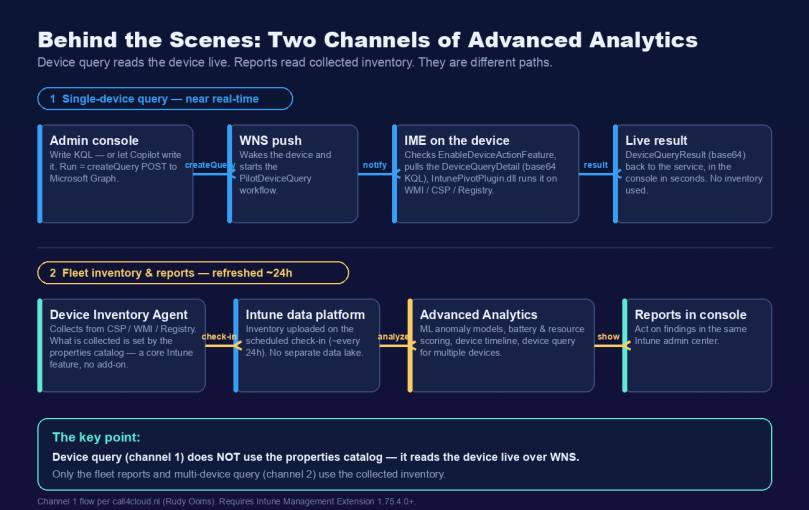
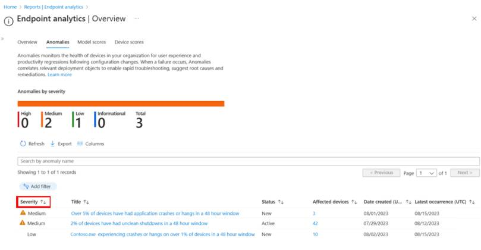
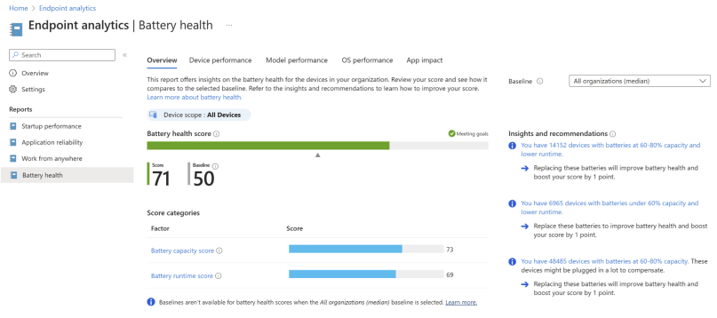
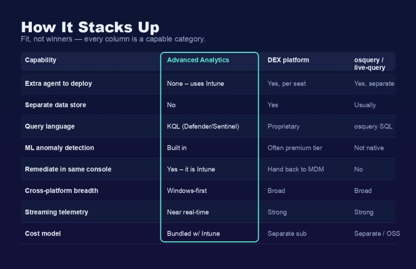
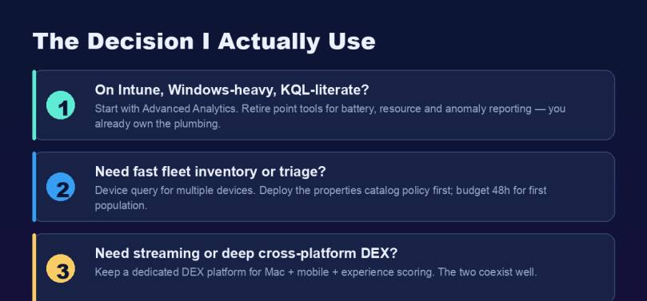

In this blog post I want to look at Microsoft Intune Advanced Analytics and compare it, in plain words, to the other analytics tools that are out there. This is the topic I know well. Before I started writing blogs and running my own company, I spent years as the tech lead for AIOps in a large enterprise. Part of my job was to evaluate analytics and digital employee experience (DEX) platforms — Nexthink, Aternity, HP’s analytics solution and several more. So this is not a marketing piece. It is what I learned from running these tools at scale, and where I think Microsoft’s approach is genuinely different.
Here is my honest summary up front: most of these platforms cook with water. They are mature and capable, but they largely solve the same problems in the same way. The hard part was never the dashboard — it was building a business case that survived a second look, because every one of them came with its own agent, its own data store, its own portal and its own license. That is exactly the cost that Microsoft Intune Advanced Analytics removes.
Worth knowing before you read on: From July 1, 2026, Microsoft Intune Advanced Analytics is included in Microsoft 365 E3 and Microsoft 365 E5 as part of Microsoft Intune Plan 2. The separate add-on that used to cost around 10 USD per user per month is now part of the plan. Many teams already own this and don’t know it yet.
What is Microsoft Intune Advanced Analytics?
Intune Advanced Analytics extends endpoint analytics inside Microsoft Intune. The important word is inside. It is not a separate product. It lives in the same admin center where you already enroll devices, push configuration and remediate.
That sounds like a small detail. After years of running the alternatives, I can tell you it is the whole game. Every DEX platform I operated needed its own agent on every device, its own data lake, and a second console to log into. With Advanced Analytics there is no extra agent. The devices you already manage are the devices you already analyze.
How does it work behind the scenes?
This is the part I wish more comparisons explained, so let me go a level deeper.

Your managed devices already send diagnostics and telemetry to Intune. Advanced Analytics builds on that same pipeline, so there is no new agent to deploy.
It helps to separate two things that often get mixed up:
- Device inventory is a core Intune feature. On Windows you collect extra hardware and software properties with a properties catalog policy. This is not part of Advanced Analytics and needs no add-on — it ships with Microsoft Intune Plan 1. (And to be clear: the properties catalog is not the settings catalog you use for configuration profiles. Two different things.) On iOS/iPadOS, Android and macOS this inventory is collected automatically.
- Advanced Analytics is the query and intelligence layer on top. Device query, the machine-learning anomaly models, battery health, resource performance and the device timeline are the parts that need the license.
Now the part that took me a while to get straight, and that most write-ups get wrong: single-device query and the fleet reports use two completely different channels.
- Channel 1 — single-device query (near real-time). This does not touch the inventory at all. When you run a query against one device, the portal sends a
createQueryPOST to Microsoft Graph, a Windows Push Notification Services (WNS) message wakes the device and starts the PilotDeviceQuery workflow, and the Intune Management Extension (IME) takes over. The IME checks theEnableDeviceActionFeatureregistry flag, pulls down a DeviceQueryDetail payload that carries your KQL as a base64 string, and runs it throughIntunePivotPlugin.dllagainst the matching WMI providers, CSP and the registry. The result is base64-encoded as DeviceQueryResult and returned within seconds. Because WNS is the transport, if WNS is blocked the query simply fails — and you need IME 1.75.4.0 or later. Rudy Ooms reverse-engineered this whole flow on call4cloud; it is the best under-the-hood write-up I have seen, and it is where the detail in the diagram above comes from. - Channel 2 — fleet inventory and reports (refreshed ~24 hours). Here the device inventory agent collects data from CSP, WMI and the registry, with the scope defined by the properties catalog (a core Intune feature). On the scheduled check-in this is uploaded to the Intune data platform — no separate data lake to build or secure. Advanced Analytics then runs its machine-learning models and KQL on top to produce the anomalies, battery, resource and device timeline reports, and to answer device query for multiple devices. A fleet-wide result therefore reflects the last inventory upload, not the current second.
![Side-by-side flow of the two Intune device query channels. Channel 1 single-device query (near real-time): createQuery POST to Microsoft Graph, WNS push wakes the device, IME checks EnableDeviceActionFeature, IntunePivotPlugin.dll runs the base64 KQL on WMI/CSP/Registry, DeviceQueryResult returns in seconds — live device, no inventory, needs IME 1.75.4.0+. Channel 2 fleet inventory and reports (~24 hours): inventory agent collects CSP/WMI/Registry data, scope set by the properties catalog (core Intune), scheduled check-in to the Intune data platform, Advanced Analytics runs the ML and reports and answers device query for multiple devices — collected inventory, about a day old](assets/e841fed4eeb9e9ad/img_1.jpg)
Because everything stays inside Intune, you act on a finding in the same console where you found it. No export, no second tool.
Hint: If device query for multiple devices returns nothing on your Windows devices, the missing piece is almost always the properties catalog policy — set it up first (it is core Intune, not Advanced Analytics), then give the inventory time to roll in. Note that single-device query does not need it, because that path reads the device live over WNS.
What can it do? A closer look
Let me go through the parts I use most, at the level of detail that actually matters in production.
Device query — KQL in a language you already speak
Device query lets you ask a device, or the fleet, a direct question in Kusto Query Language (KQL) — the same language your security team already uses in Microsoft Defender, Microsoft Sentinel and Azure Monitor. A single-device query gives you near real-time access to that device; a multi-device query runs over the collected inventory. In every other live-query tool I ran, the team had to learn that product’s own query dialect and operate yet another console. Here, if you write KQL, there is almost nothing new to learn:
// Find Windows devices that are low on disk space
DeviceData
| where FreeStorageGB < 10
| project DeviceName, Model, FreeStorageGB, OSVersion
| sort by FreeStorageGB asc
That shared query language across endpoint and security is, in my experience, a real differentiator. None of the standalone DEX tools could plug into the same query skills and the same security data my team already had.
My favorite part: let Copilot write the KQL. With Security Copilot in Intune you don’t even have to write the query yourself. You describe what you want in plain language — “show me Windows 11 devices with TPM 2.0 that haven’t synced in 14 days” — and Copilot generates the KQL, shows you the query, and explains how it built it. It works the other way too: paste a query a colleague wrote, ask “what does this do?”, and you get a plain-language explanation. For me this is the feature that makes device query usable by the whole team, not just the two people who are fluent in KQL. I have never had that with any other analytics tool — the natural-language-to-query step always lived in a separate product, if it existed at all.
Anomaly detection — the machine learning, explained
The anomalies report is the feature that competes most directly with the premium DEX platforms, and it is where Microsoft’s data advantage shows. It watches for application hangs, crashes and Stop Error restarts, then groups affected devices so you can find the common cause.

The anomalies report, grouped by severity. Source: Microsoft Learn.
Behind it sit four statistical models, and it helps to know which is doing what:
- Threshold-based heuristic — flags a device when crashes, hangs or Stop Error restarts cross a set threshold. Simple, good for obvious or static issues.
- Paired t-test — compares the same device before and after a change (a policy update or an OS update) and looks for a statistically significant difference. This is the one that catches “the update broke it.”
- Population Z-score — finds outlier devices or apps compared to the fleet average. Needs a large dataset to be accurate.
- Time-series Z-score — a sliding window over time, so it adapts to trends instead of a fixed threshold.
When something is flagged, device correlation groups show the shared factors — app version, driver update, OS version, device model — and a prevalence rate tells you what share of a group is affected. In a large enterprise, this is exactly the view I always had to build by hand before: it points straight at the bad driver or the one hardware model, instead of leaving you to correlate it yourself.
Battery health — more than a single score
The battery health report scores every Windows laptop battery, but the detail underneath is what makes it useful.

The battery health report with score and insights. Source: Microsoft Learn.
The battery health score is a weighted average of two scores, each from 0 (poor) to 100 (exceptional):
- Capacity score — based on maximum capacity, which is full-charge capacity divided by design capacity. A battery designed for 70 Watt-hours that now holds 35 is at 50%.
- Runtime score — based on the estimated time a device runs on a full charge.
You also get the cycle count, and an App impact tab that shows which apps drained the most battery over the last 14 days. That last part is what turns “this laptop has bad battery life” into “this laptop runs a power-hungry app” — a different fix entirely. With the alternatives, getting this depth meant a separate hardware-analytics module, often at extra cost.
Device timeline — the troubleshooting view I use most
The device timeline is, day to day, the report I open most often, so it deserves more than a footnote. It shows a single device’s events — restarts, Stop Errors, app hangs and crashes, driver and update events — on one low-latency timeline. It replaces the older application reliability report and pulls the events that used to be scattered across logs into one ordered view.
Why it matters: when a VIP’s machine misbehaves, the first question is always “what changed and when?”. The timeline answers that directly. I can see that the crashes started right after a specific update or driver, line it up against the anomalies report, and hand the service desk a root cause instead of a guess. For tier-1 and tier-2 support this ends most tickets without escalation — and it does it without a forensic agent on the device. In the tools I ran before, getting this ordered, correlated view meant exporting event logs and stitching them together by hand.
Resource performance — purchasing decisions with evidence
Resource performance ranks CPU and RAM pain by device, model and manufacturer. That turns “we think the 2022 fleet is slow” into a defensible, data-backed purchasing argument. Together with battery health, it is the report that makes hardware-refresh planning a fact-based conversation with procurement rather than a gut feeling. It is built into the same console — no extra agent feeding it.
Here is how I weigh it. This is about fit, not a winner — every column is a capable, mature category, and the DEX platforms genuinely do some things better.

| Point | Intune Advanced Analytics | Dedicated DEX platform | osquery / live-query tool |
|---|---|---|---|
| Extra agent to deploy | None — uses Intune | Yes, per seat | Yes, separate |
| Separate data store | No | Yes | Usually |
| Query language | KQL (same as Defender/Sentinel) | Own language | osquery SQL |
| ML anomaly detection | Built in | Often a premium tier | Not built in |
| Fix it in the same console | Yes — it is Intune | No, go back to MDM | No |
| Cross-platform reach | Windows-first | Broad | Broad |
| Streaming telemetry | Near real-time | Strong | Strong |
| Cost | Included in M365 E3/E5 (from July 1, 2026) | Separate subscription | Separate / open source |
The honest take from the evaluations I ran — Nexthink, Aternity, HP’s analytics tooling and others: these are strong, mature products. They lead on breadth (Windows, macOS, mobile and rich experience scoring in one model) and on continuous streaming telemetry. If that breadth is your main need, they still win, and I will say so plainly.
But three differences kept showing up in my evaluations, and they are architectural, not cosmetic:
- Where the data lives. Every standalone platform ships its telemetry into the vendor’s own cloud data lake. Advanced Analytics keeps it inside your existing Microsoft Intune and Microsoft 365 tenant boundary — one less data-residency and security review, which in a regulated enterprise is not a small thing.
- One device identity, not two. The third-party tools build their own device record, and you spend real effort reconciling their device with your Intune object before a report is trustworthy. In Advanced Analytics the analyzed device, the configured device and the compliance device are the same object. No matching, no data-quality chore.
- Time-to-value. A DEX rollout is an agent deployment project — packaging, ringed rollout, tuning, months of it. Advanced Analytics is a license switch: enable it, wait up to 48 hours, done.
When it came to the business case, that combined overhead — a second agent, a second data lake, a second identity to reconcile, a second team to run it — was always the part that made the numbers thin.
Where Microsoft’s approach is uniquely suited
The deepest differentiator is structural, and it is the one no standalone tool can copy: Microsoft owns all three layers at once — the OS telemetry, the management plane and the security graph. Nexthink, Aternity and the rest are excellent at the analytics layer, but they sit beside your management and security stack and have to integrate back into it. Advanced Analytics sits inside it. That is why a finding can flow straight into a configuration change, a compliance policy or a Microsoft Defender investigation without leaving the platform or re-identifying the device. Pulling the concrete differentiators together:
- No extra agent and no separate data platform. It rides the telemetry your managed devices already send, and the data stays in your tenant.
- One query language across endpoint and security. KQL is shared with Microsoft Defender, Microsoft Sentinel and Azure Monitor, so your existing skills and your existing security data carry straight over. None of the standalone tools could plug into that.
- Copilot writes the queries for you. Security Copilot in Intune turns plain-language questions into KQL for device query — so the whole team can ask the fleet questions, not just the two KQL experts. I never had a built-in equivalent in the standalone tools.
- You remediate where you analyze. The finding and the fix live in the same admin center — for me this is the single biggest operational win, and the one the side-by-side tools structurally cannot match.
- Machine learning is built in, not a premium upsell. The anomaly models ship with the capability instead of sitting behind a higher tier.
- It is included in Microsoft 365 E3 and E5. No separate add-on to justify. This is the point that finally closes the business case I could never quite make with the standalone tools.
Real-world scenarios
Enterprise — catching a bad driver before the storm. This is a real pattern from my AIOps days. A graphics driver goes out to a few thousand laptops on a Friday. By Monday the anomalies report shows a new medium-severity item: a spike in Stop Error restarts. Here the paired t-test model earns its place — it compares each device before and after the change, so the report isn’t guessing, it is pointing at a real regression. You open the device correlation group and it is unambiguous: one manufacturer, one model, one driver version, with a high prevalence rate. To be clear about what happens next, because this is where people overstate it: the anomalies report does not have a magic “roll back” button. What it gives you is the root cause and the affected and at-risk device lists. You then act with the core Intune tools — and crucially, without leaving Intune: confirm the spread with a multi-device device query, decline that driver version in your Windows driver update profile so it stops being offered to the rest of the fleet, and push an Intune remediation script (a pnputil driver rollback) to the devices already hit. Detect, find root cause, remediate — all in one platform, before the service desk volume even moves. With the standalone tools I ran, detection lived in one product and the fix lived in another, and bridging the two by hand was the slow part.
SMB — capabilities that used to be out of reach. A leaner IT team rarely had the budget or the headcount to run a dedicated DEX platform — someone has to own that agent and that data store. The packaging change matters most here: an organization on Microsoft 365 E3 or E5 now gets battery health, anomaly detection and device query as part of Microsoft Intune Plan 2, with no new agent, no new contract and nobody to train on a second console. (One honest caveat: this applies to Microsoft 365 E3/E5 — a tenant on Microsoft 365 Business Premium is not part of this change.) For a small team, near real-time single-device query alone — ask one misbehaving laptop a question and get an answer in seconds — replaces a lot of remote-session guesswork.
What I would choose

- Mostly Windows, already on Intune, team knows KQL? Start with Advanced Analytics. You likely already own it, and you can retire separate battery, resource and anomaly tools.
- Need quick answers across the fleet? Use device query for multiple devices — deploy the properties catalog policy first and remember the inventory refreshes about every 24 hours.
- Need true streaming telemetry or deep macOS and mobile experience scoring? A dedicated DEX platform still leads there, and the two work fine side by side.
Things to watch out for
- It is not instant. After licensing, and for multi-device query, it can take up to 48 hours before data appears. Turn it on before you need it.
- The properties catalog policy is mandatory on Windows. Remember it is a core Intune feature you configure separately — without it, device query for multiple devices returns nothing.
- It is near real-time, not a streaming SIEM. Single-device query is near real-time; fleet inventory is about a day old by design.
- Check your cloud and platform. Device query and resource performance are not in DoD today, and the deepest reporting is Windows-first.
A quick word on licensing
This is the part that changed the math for me, so it is worth repeating clearly. From July 1, 2026, Microsoft Intune Advanced Analytics is included in both Microsoft 365 E3 and Microsoft 365 E5 as part of Microsoft Intune Plan 2 — the old per-user add-on is gone. A few of the more advanced Intune capabilities stay with Microsoft 365 E5: Microsoft Intune Endpoint Privilege Management, Enterprise App Management and Microsoft Cloud PKI. But Advanced Analytics itself is in E3 and E5. The details are in the Microsoft Intune blog on the packaging changes.
After years of trying to justify a separate analytics platform, this is the change I find most exciting: the business case largely makes itself, because most teams already own the license.
If you want to read where all of this is heading, I wrote about it in AI-driven endpoint management: the future with Intune. For the official details, the Advanced Analytics overview on Microsoft Learn is the page I keep open.
I hope this helps when you compare Intune Advanced Analytics with the other tools out there.
Stay healthy, Cheers Jannik